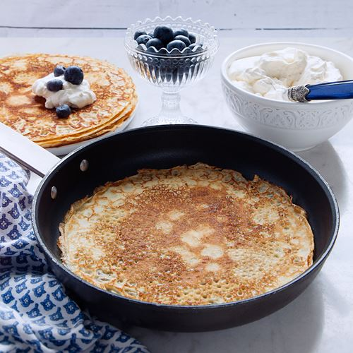

Pannkakor!

Description
This is an easy fix, just some pannkakor
Ingredients
- 2 dl vetemjöl
- 0.5 tsk salt
- 6 dl möjlk
- 3 st ägg
- ca 50 g smör
Till servering
- jordgubbsylt
- blåbär
- grädde
- nutella & banan
- Blanda vetemjöl och salt i en bunke
- Tillsätt hälften av mjölken och vispa till en jämn smet
- Tillsätt seden resten av mjölken och vispa
- Vispa sedan ner dina ägg
- Låt smeten vila i ca 20 min, sedan kan du börja steka på medelhög värme med smör i pannan